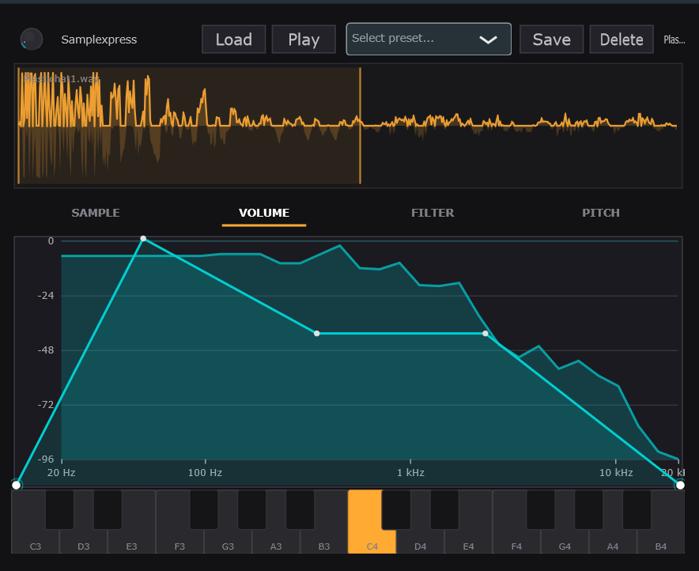

A focused single-sample instrument.
Load a WAV or MP3, play it polyphonically across your keyboard with pitch-shifting, and shape the sound with three ADSR envelopes. Built with JUCE — ships as a VST3 plugin and a standalone Windows app.
Features
Sample loading
WAV, MP3, and AIFF via file browser or drag-and-drop onto the plugin window, with a cyan border visual indicator on drag-over.
Polyphonic playback
16-voice polyphony with pitch-shifting across the full keyboard range, and a per-voice ~20 ms release fade on note-off.
Three ADSR envelopes
Independent Volume, Filter Cutoff, and Pitch modulation envelopes with interactive drag-to-edit graphs, per-node tooltips, and live numeric readouts while dragging.
Loop with crossfade
Forward loop with cosine equal-power crossfade (0–500 ms). Loop start, end, and crossfade length are draggable on the waveform; loop state is cached per voice for real-time safety.
Low-pass filter
State-variable TPT filter with cutoff and resonance controls, plus an interactive magnitude-response curve you drag directly.
Spectrum analyzer
Real-time FFT display (32 log-spaced bins, lock-free ring-buffer capture) visible behind every tab.
Visual piano keyboard
2-octave on-screen keyboard (C3–B4) that lights up in real time on MIDI note-on/off.
Preset system
Save, load, browse, and delete presets as XML files in Documents/Samplexpress/Presets; factory "Init" preset auto-created on first run.
VST3 + Standalone
Per-user VST3 install path — no admin required. Standalone .exe for auditioning without a DAW.
Screenshot

Build
Built with JUCE 8.0.12 and CMake + Ninja on Windows. See the project README for full setup details.
cmake -B build -G Ninja -DCMAKE_BUILD_TYPE=Release ^
-DCMAKE_PREFIX_PATH="%JUCE_FRAMEWORK%"
cmake --build build --config ReleaseThe build produces:
- Standalone:
build/Samplexpress_artefacts/Release/Standalone/Samplexpress.exe - VST3:
build/Samplexpress_artefacts/Release/VST3/Samplexpress.vst3
The VST3 is automatically copied to %LOCALAPPDATA%\Programs\Common\VST3 during build — no admin privileges required.
Download
Get the latest release on GitHub:
Or clone the repository and build it yourself — see Build above.